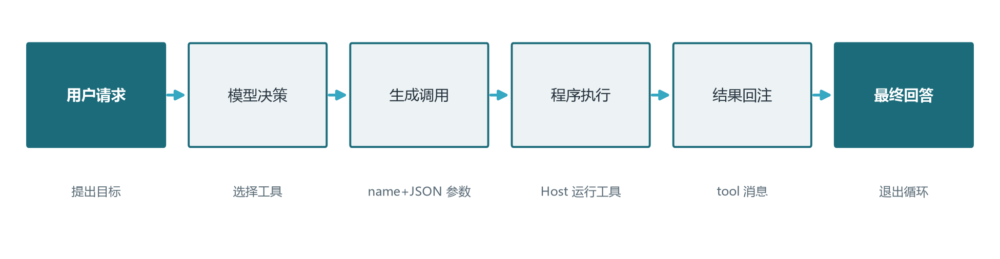
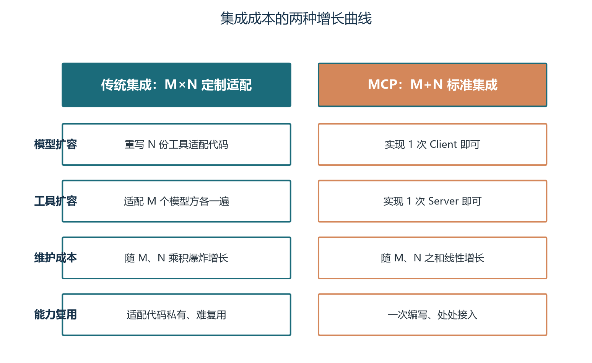
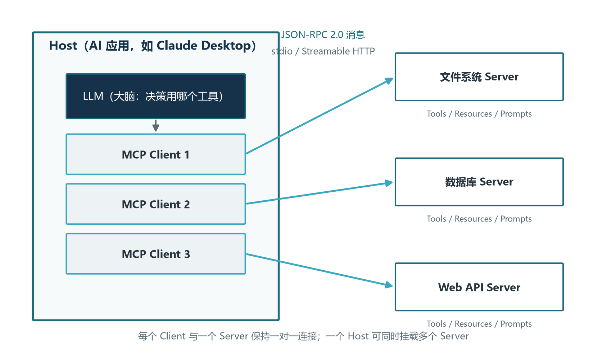
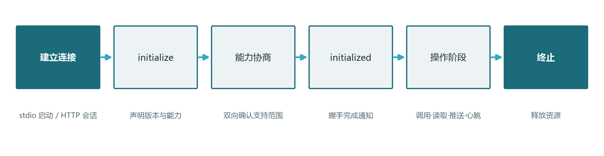
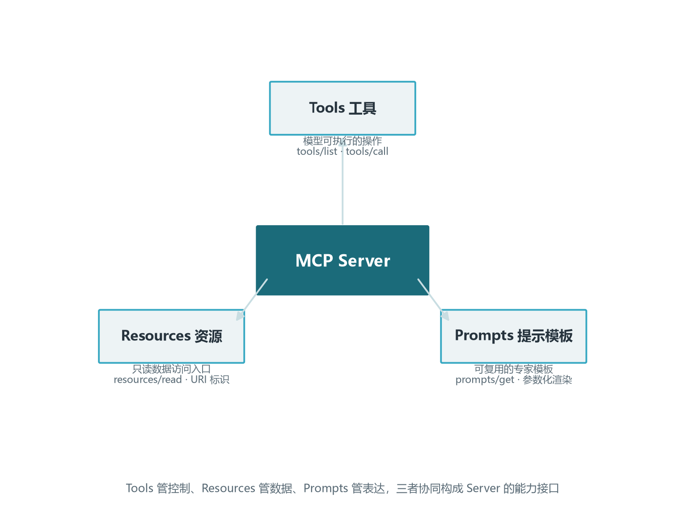

前言：给模型一双可编程的手
到了卷十，Agent 五器官的拼图已经补齐了四块：卷七给了语言器官（提示词工程），卷八给了知识器官（RAG），卷九给了记忆的物质基础（向量数据库）。但如果你只能和模型“说话”，那么无论它有多聪明，都像一位被关在玻璃房里口若悬河的顾问：能分析、能建议、能解释，唯独不能拧一下水龙头、查一下数据库、订一张机票。卷十要装的，是 Agent 的行动器官——让模型从“会说话”跨入“能办事”的那一双可编程的手。
这双手由两层技术构成。底层是 Function Calling：模型学会在回复中输出结构化的工具调用指令，主机程序解析并执行，把真实世界的反馈回填给模型，整个过程构成“感知→决策→行动→观察”的最小闭环。Function Calling 在 2023 年由 OpenAI 率先推出，至今已成为所有主流模型厂商的基础能力。上层是 MCP（Model Context Protocol，模型上下文协议）：2024 年 11 月 Anthropic 发布的一套开放标准，统一了“AI 应用如何接入工具与数据”的方式，把 M 个模型对接 N 个工具的 M 乘 N 集成矩阵压缩为 M 加 N。理解这两层之间的分工，是理解现代 Agent 工具系统的钥匙。
本卷不是一份 API 文档，而是面向工程师的原理手册。我们关心的不仅是“工具调用怎么写”，更是“为什么需要 JSON Schema 描述工具”“为什么并行调用能减半延迟”“为什么 MCP 能成为事实标准”“为什么生产环境的工具调用必须配审计”。理解了“为什么”，API 变了你可以从容迁移；只记住了“怎么做”，三个月后你将面对一个完全陌生的协议栈。
学完本卷，你将能够：
- 画出一个完整的 Function Calling 生命周期，理解模型、主机、工具三方在每一步各自做了什么；
- 编写规范的 JSON Schema 工具描述，用 Structured Outputs 把工具调用的结构错误率压到接近零；
- 解释 MCP 的 Host / Client / Server 三层架构与 stdio / Streamable HTTP 两种传输方式的取舍；
- 区分 Tools、Resources、Prompts 三大原语的语义与协同，并理解 Roots、Sampling、Elicitation、Tasks 等客户端能力的边界；
- 用 Python SDK 从零搭建一个 MCP Server，并在生产清单的指导下加上审计、最权与输入校验。
第一、二章是工具调用原理层，回答“模型如何学会动手”；第三、四章是 MCP 协议层，回答“动手时如何接入世界”。如果你赶时间，可以先读第三章的 3.1 节掌握 M 乘 N 与 M 加 N 的直觉，再回头补细节。第二章的设计原则偏经验主义，建议带着自己工作中的工具定义来对照阅读，体感会更深。
关于动手环境说一句：本卷的代码示例只需要 Python 与一个 LLM API Key 即可跑通；MCP Server 部分的依赖通过 uv 或 pip 一行安装。涉及的模型示例以 OpenAI 兼容接口为主，因为它是当前生态最广的契约；Anthropic 与开源模型（Qwen3 等）走兼容路径时同样适用。所有示例都设计为可在普通笔记本上完成，不需要 GPU 集群。
第一章 Function Calling：工具调用的原理
1.1 为什么模型只会说不够
2022 年底 ChatGPT 发布后，大语言模型的能力天花板被一次又一次推高，写文案、做翻译、编代码、讲故事样样精通。但很快工程师们撞上了一堵墙：模型再聪明也只能生成文字。问它“今天北京天气如何”，它要么老实承认不知道，要么凭训练语料里的旧印象编一个温度；问它“帮我把这张表导入数据库”，它只能写出 SQL 语句，真正去执行那条 SQL 还是得靠人。把模型的推理能力“工程化”为可执行的行动闭环，正是 2023 年到 2024 年整个 Agent 领域的核心命题。
这道题的第一个解法是让模型输出结构化的指令，主机程序解析后调用真实工具——这就是 Function Calling。它的关键转变是把语言模型的输出从“给用户看的回答”扩展为两类：一类是给用户的最终回答，另一类是给主机的工具调用指令。模型在推理时根据上下文判断“这件事我得查一下”，于是输出一段结构化 JSON（包含工具名、参数），主机拿到后调用真实 API，把结果回注给模型，模型再决定下一步。这种循环把“思考”与“行动”用协议串成一条线，每一步的输出都是下一步的输入——Agent 的工具器官由此而工作。
这种范式的深远影响在三年后才被完全看清。今天我们熟悉的深度调研（Deep Research）、编程 Agent（Cursor、Claude Code）、浏览器操作（Computer Use）都建立在 Function Calling 这块基石上。理解它，就是理解后续所有 Agent 形态的入门。
1.2 工具描述就是模型的说明书
既然模型要决定何时调用哪个工具、传什么参数，那它就必须“知道”有哪些工具可用、每个工具做什么、参数怎么填。这份信息以 JSON Schema 形式写在请求体里，每次调用时随提示词一起注入模型上下文。这就是工具描述——模型阅读它来理解工具能力，所以我们常把工具描述称作“模型的工具说明书”。
一份合格的 JSON Schema 工具描述至少包含四件事：工具名（name）、工具功能的人类语言描述（description）、参数的 Schema（parameters）、必填字段清单（required）。下面这段描述定义了一个查询天气的工具，模型读到它就知道：这个工具能查指定城市的天气，city 是必填的城市名，unit 是可选的温度单位，且只有摄氏与华氏两个取值。
| 字段 | 作用 | 对模型的意义 |
|---|---|---|
| name | 工具唯一标识 | 模型用名来调用，错别失败 |
| description | 工具功能的自然语言描述 | 模型判断“何时该调我” |
| parameters | 参数的类型与约束 Schema | 模型知道怎么填参数 |
| required | 必填参数列表 | 模型知道哪些参数不能不传 |
描述的质量直接决定调用的准确率。模糊的描述如“用户 ID”远不如“用户的唯一标识符，格式为 UUID v4，例如 550e8400-e29b-41d4-a716-446655440000”来得有效；后者连格式样例都给齐了，模型几乎不会传错。Schema 的力量正是把“自然语言的歧义”压缩为“机器可校验的精确契约”。
几条经过实战检验的描述经验值得强调。第一，description 要具体到场景：“查询某地的实时天气，输入城市名，返回当前温度、湿度、天气状况”比“获取天气”有效十倍；模型选择工具的依据主要就是这段文字，含糊就会导致模型忽略它。第二，参数枚举尽量用 enum 显式列出取值范围，而不是写在 description 里——enum 是机器可约束的，description 不是。第三，复杂场景善用 additionalProperties: false 防止模型在参数里塞入多余字段；透传参数时则保留 true。第四，嵌套层级尽量浅，超过三层会让模型的解析准确率显著走低，扁平化或拆工具优于深嵌套。第五，工具名用动词或动名词短语（search_news、get_weather），避免抽象名词（tool1、helper）。
工具描述是“提示词工程”的延伸，但它的工程约束更刚性。提示词写得不好，模型可能跑偏；工具描述写得不好，模型根本调不起来。
1.2.1 一个真实可读的 Schema 示例
把上面那段抽象描述落到具体代码上，看一份高质量的工具描述长什么样。下表把刚才讨论的四要素与几条实战经验凝缩在一段 JSON 里，工程师可以直接拿它作模板改造自己项目中的工具定义。值得对照阅读的是 description 字段——它不仅是文档，更是模型阅读“说明书”的入口。
{
"type": "function",
"function": {
"name": "search_news",
"description": "按关键词搜索最新新闻，输入关键词与可选的时间范围（today、this_week、this_month）与数量限制（1 到 20），返回新闻标题、来源、摘要与发布时间戳（ISO 8601 格式）。适用于查询最近发生的具体事件、政策变动、产品发布。",
"parameters": {
"type": "object",
"properties": {
"keyword": {
"type": "string",
"description": "搜索关键词，2 到 50 字符，例如 'MCP 协议'、'Qwen3'"
},
"time_range": {
"type": "string",
"enum": ["today", "this_week", "this_month"],
"description": "时间范围，限定最近发布的内容"
},
"limit": {
"type": "integer",
"minimum": 1,
"maximum": 20,
"default": 5,
"description": "返回新闻条数上限，默认 5 条"
}
},
"required": ["keyword"],
"additionalProperties": false
},
"strict": true
}
}这段描述里有几条值得指出的工程要点：keyword 的描述里给出了字符范围与示例；time_range 用 enum 把可选值从描述里提升为可机器校验的约束；default 字段为可选参数提供默认值，模型不传时不会卡住；strict 模式开启后整个 Schema 都被受限解码保护，模型输出几乎不可能偏离契约；additionalProperties false 防止模型在参数里塞入多余字段。这就是工程意义上的“好说明书”：模型读完就能写对代码，Host 端校验只是兜底。
1.3 工具调用的生命周期：从决策到回注
一个完整的 Function Calling 循环由六阶段构成：用户请求、模型推理、输出调用、主机执行、结果回注、生成回答。整个过程通常在毫秒到秒级之间完成，给人“模型在思考”时其实模型与外部系统已经在来回了若干次。

第一阶段是用户请求：用户在对话框输入目标，主机把系统提示词、历史消息、工具描述列表一起发给模型。第二阶段是模型推理：模型阅读所有上下文后决策下一步，可能输出文字回答（任务已完成），也可能输出一个或多个工具调用请求。第三阶段是输出调用：调用请求的结构是工具名、参数 JSON 字符串、可选 ID，主机拿到后按名查工具、按参数调用。第四阶段是主机执行：这是唯一真正“动手”的环节——查数据库、调 API、读文件、跑命令，每种工具背后都连着一个真实世界。第五阶段是结果回注：主机把工具返回值包装为 role 为 tool 的消息，与对应 ID 一起加入上下文。第六阶段是模型基于新信息继续推理，直到模型输出最终文字回答或达到上限。
这个循环看似朴素，藏着三个工程关键。其一是结构化校验：模型可能输出一个 schema 不符的工具调用，主机在调用前必须用 JSON Schema 校验一遍，提前拦截类型错误与遗漏字段，避免无效调用。其二是结果注入：工具返回动辄数千字，原样回灌会很快撑爆上下文，必须按“与决策相关”的原则截断或摘要。其三是上限保护：循环必须有最大步数与单步超时，否则模型陷入循环会把账单烧穿——这一点卷十二会专门展开。
走一个具体例子：用户问“帮我查北京和上海今天哪个更适合户外活动”。第一轮，模型推理“需要两个城市的天气数据”，于是输出两个并行调用请求：一个 get_weather(city=Beijing)，一个 get_weather(city=Shanghai)。主机并行执行两个调用，得到北京的“晴 25 度，湿度 40%”与上海的“多云 30 度，湿度 75%”。两个结果作为两条 tool 消息回注上下文。模型基于这两条信息推理“北京晴朗低湿更适合户外”，输出最终回答。整个过程模型推理两次、工具调用两次、串行下耗时是“推理 + 工具”之和的两倍，并行下则压成“推理 + 慢的那个工具”。延迟降低一半以上，这就是并行调用的价值。
1.4 并行函数调用：让延迟减半的关键武器
传统的串行调用模式是“模型推理一次、调用一个工具、等结果回来、模型再推理”。当任务涉及多个彼此独立的工具调用时，这种模式把多个工具的执行时间累加起来，端到端延迟被显著放大。2023 年 11 月 OpenAI 在 DevDay 上正式发布并行函数调用能力，模型可以在一次推理中同时输出多个独立调用请求，主机并行执行，延迟从天梯式叠加压为单次瓶颈。
并行调用的核心前提是工具之间“无依赖”。四种典型的不适用场景需要警惕：第一种是数据依赖，工具 B 的输入需要工具 A 的输出作为前提；第二种是副作用依赖，工具 A 修改了状态、工具 B 必须在修改后的状态下运行；第三种是资源竞争，两个工具同时写同一条记录会造成冲突；第四种是业务规则禁止并发，比如同一支付账户的两次扣款必须串行。当工具之间彼此独立时，并行调用可以把 N 个工具的总耗时从“各工具耗时之和”压缩为“最慢那个工具的耗时”，节省非常可观。
主流模型现在都具备良好的并行能力，但训练数据差异让不同模型的并行判断准确率参差不齐。工程上有两类增强手段值得记住：第一类是在工具描述里显式标注工具间的依赖关系（如“调用前请先调用 search_user”）；第二类是通过 Host 端的依赖分析器自动判定，对无依赖子集做并行调度，对有依赖子集保持串行。卷十二的规划技术会进一步深化这一思想。
并行调用还有一层隐性收益是 Token 成本的下降。原本需要 N 轮推理、每轮重复支付前面全部历史的 Token 费用，并行后压缩为一轮推理，从根源上减少了 Token 消耗。基准测试显示，四个独立工具的并行调用相比串行，端到端延迟通常下降 60% 到 70%，Token 消耗下降 20% 到 35%。在低延迟敏感的实时聊天场景，并行的收益最大；在批处理或后台任务中，并行的延迟收益可能不那么关键，但 Token 节省依然可观。
生产环境中还有几条工程纪律必须强调。每个工具调用必须有独立超时（如 5 秒），超时立即取消，避免被慢工具阻塞整体响应；当一次触发的工具数过多（如 20+），要用信号量（Semaphore）控制并发上限，避免对后端造成雪崩；对有副作用的工具（修改数据库、发送邮件、扣款）绝对不能盲目并发，必须经依赖分析后串行；幂等且结果稳定的工具（汇率、配置查询）应引入本地缓存，进一步压低调用次数。P95 与 P99 才是用户体验的真实指标，平均延迟常常掩盖了长尾问题。
1.5 错误回注与自我纠正
工具调用失败的概率比直觉中高得多：接口超时、参数校验失败、权限不足、数据源不可用，任何一环都可能出错。回注失败信息给模型、让模型决定如何应对，是 Function Calling 范式的关键闭环——区别于“执行失败就报错给用户”的传统 API 集成。模型收到错误信息后可以重试、换工具、改参数、甚至承认做不到，比任何预设的 if-else 都灵活。
错误回注有几种典型形态。第一种是主机校验层拦截：模型输出的工具名不在白名单内，或参数不符合类型约束，主机不调用，直接把错误作为 tool 消息回注。第二种是工具执行层异常：数据库连接超时、第三方 API 返回 5xx，主机捕获异常后包装为结构化错误消息，并附上错误码与可读说明。第三种是工具业务层失败：比如查询天气时城市不存在，工具自己返回带 error 字段的 JSON，而不是抛异常。每种情况下，回注的错误都必须包含足够信息（错误码、错误描述、可能的原因），让模型能据此决定下一步。
模型的自我纠正常见模式有四类：直接重试（针对临时网络故障）、改参数重试（参数填错）、换工具（首选工具不可用）、降低要求（多次尝试后仍然失败）。在系统提示词中明确写出“工具失败时请根据错误信息决定重试、换工具或放弃”这一规则，能显著提升模型的纠错成功率。提示词里还可以加一句“如果所有工具尝试都失败，请明确告知用户哪些信息未能获取”，给模型一个清晰的“放弃”信号，避免它在循环里耗光预算。
但回注不是万能药。当工具返回的错误信息本身就是模糊的（如“未知错误”），模型无从判断是网络问题还是权限问题，纠错就会原地打转；当错误接连多次发生时，重试可能只是把同一根稻草递给骆驼。这时候就需要工程层面的兜底：超过重试上限后强制中断、记录失败现场到评估系统、必要时上报人工处理。把“模型自我纠正”与“工程兜底”结合起来，才是生产系统该有的设计。
Function Calling 的工程价值不只是“让模型能调工具”，更是把执行失败的处置权从“写死的 if-else”转移到“模型的动态判断”。回注错误信息不是开发上的捷径，是给模型一个真正能用的反馈通道；失去了这条通道，模型就无法从失败中学习。
1.6 调试与可观测性初探
工具调用出了错，工程师最常问的问题是“到底是模型选错了工具、参数填错了，还是后端服务出了问题”。一个最小可用的可观测性方案应当覆盖三个环节。第一，给每次调用打 trace id 并贯穿全链路，工具响应里回传 trace id，日志里按 trace id 检索就能还原完整过程。第二，记录每次调用的“输入、输出、耗时、决策依据”——决策依据包括模型的提示词摘要、它输出的工具调用 JSON、它读到的工具描述版本，方便复盘“模型为什么选了这个工具”。第三，建立异常指标体系：调用失败率、平均延迟、P95/P99 延迟、按工具与按用户的失败分布，这些都是定位问题的第一手材料。卷十五会展开可观测性与评估体系的完整方法论，但工具调用层的日志与指标从第一天就该埋好——没有埋点的 Agent 就像没有仪表盘的飞机。
第二章 从 Function Calling 到 Structured Outputs
2.1 JSON 模式与 Schema 约束
Function Calling 让模型能输出结构化调用指令，但“结构化”只是对格式的最低要求，并不保证输出严格符合 Schema。模型可能把 city 写成字符串“北京”却又混入一个没声明的 extra 字段；可能把 date 写成“2025-07-16”却又写成“July 16, 2025”。传统做法是让 Host 端做严格校验，把错误丢掉重试或直接报错——但每次重试都是一次额外的模型调用，成本与延迟都会上升。
2024 年 8 月 OpenAI 推出 Structured Outputs（结构化输出），用 strict 模式把这件事推到了模型推理的内部。它的核心机制叫“受限解码”（Constrained Decoding）：在推理开始前把 JSON Schema 编译为一个有限状态自动机（Finite State Automaton），在自回归的每一步，只允许模型从自动机允许的 token 集合中采样。这意味着无论模型如何采样，输出必然符合 Schema——这不是概率性保证，而是数学保证。
这件事听起来像是工程小改进，实际是质变。以前是“模型输出可能正确、Host 校验、错了重试”；现在是“模型输出必然符合 Schema，Host 校验只是兜底”。出错率从偶发变为近零，重试大幅减少，Token 消耗下降，更复杂的嵌套 Schema 也敢用了。代价是推理时每一步要查自动机、采样受限，吞吐量会略降——但因为减少了重试轮次，端到端延迟常常不升反降。
Structured Outputs 对 Schema 有些子集限制（如不支持 minLength/maxLength、oneOf/anyOf 在某些字段下受限），定义工具时需要避开这些限制。OpenAI 提供了一个工具“Schema 转换”接口，能把不兼容的 Schema 自动调整为可用形态；其他厂商（Anthropic 通过 tool_choice 与严格提示词）也在提供类似的保证，但实现机制各异。
2.2 工具设计的最佳实践
工具描述的写法，本质上是一项软件工程任务——它决定了模型与外部世界的接口契约。一份糟糕的工具描述会让模型反复调错，一份高质量的工具描述会让模型几乎不需要人工干预。这一节给出五组经过实战检验的工具设计原则。
第一组：命名与粒度。工具名用动词短语，粒度保持“单一职责”——search_news 不要做成 search_news_and_weather；每个工具对应一种能力，模型才能准确选择。当两个动作经常需要一起做时，可以拆工具，让模型自行组合，而不是塞进一个大工具里。粒度过粗（万能工具）会让模型在“什么场景该调”上犹豫；粒度过细（一句话一个工具）则会让工具列表爆炸，挤占上下文预算。
第二组：描述的完整性与示例。description 应当包含工具的功能、调用时机、输入要求与典型场景，最好附上一两个使用示例（写在 description 末尾）。例如：“查询某城市的实时天气，输入城市名（如 beijing、tokyo）与可选的温度单位（celsius 或 fahrenheit），返回 JSON 格式的温度、湿度、天气状况与时间戳。”参数描述同样需要具体到格式、取值范围、默认行为与典型示例。
第三组：参数设计的工程约束。required 字段尽量少，只放业务必须的字段；可选字段给默认值，模型填不出来时不会卡住；enum 替代描述里写“可选值”；嵌套层级不超过三层，复杂对象扁平化为多个具名参数；additionalProperties 显式声明，避免出现未定义的副作用字段。当参数有强校验要求（如手机号格式、日期格式），Schema 层面尽可能用 pattern 或 format 字段约束。
第四组：返回值的结构与边界。工具返回值是字符串（绝大多数 Host 期望字符串），但内部可以是 JSON、Markdown 或纯文本。原则是“模型易读”：结构清晰、字段语义明确、避免大段冗余。例如天气工具返回 JSON 即可，新闻搜索工具返回 Markdown 摘要更友好，错误返回要带 error 字段与可读说明。返回值的截断是另一个工程问题：原始数据可能上千字，但模型只需要“决策相关信息”，Host 应当按需摘要或截断到合理大小（通常 1 到 2 千字符）。
第五组：副作用与权限标注。对有副作用的工具（写入数据库、发送邮件、删除文件），在 description 中显式标注“有副作用，可能需要用户确认”，并配合 Host 端的二次确认机制（详见第二章的工具设计与生产清单）。这能显著减少模型误调用导致的灾难性后果，是工程安全设计的最后一道防线。
2.3 工具数量与选择准确率的关系
一个常被工程师忽视的问题是：工具列表越长，模型的选择准确率越低。这是因为模型需要在更多候选中做出正确判断，注意力被分散；当工具描述存在语义重叠时，模型会陷入“该调 A 还是 B”的犹豫。学术界有“工具选择准确率随工具数量呈现近似对数下降”的经验规律：10 个工具时准确率可能还在 90% 以上，30 个工具时可能跌到 70%，50 个以上就很难保持可靠了。
因此工具的设计原则不是“越多越好”，而是“合适就好”。有几条工程经验值得记住。第一，按业务场景动态启用工具：用户在客服场景下不要暴露代码执行工具；用户在编程场景下不要暴露支付扣款工具。工具启用按用户角色、当前任务类型做白名单控制。第二，把工具分组：用“工具集”（Tool Group）的概念把工具按业务域组织，一次只激活当前任务需要的组。第三，用子智能体隔离：当工具数量实在压不下来时，把工具集分给多个子 Agent 处理，每个子 Agent 负责一个业务域，主 Agent 负责把任务分派给合适的子 Agent——这是多智能体分治的常见模式，卷十三会详细讨论。
Schema 严格性也会影响选择准确率。研究与实践都表明，Structured Outputs 不仅降低结构错误率，还常常提升选择准确率——因为受限解码逼迫模型在每一时刻的候选更明确，注意力更聚焦。这是一个意外的收获，值得在生产系统中充分用起来。
2.4 一个完整的调用循环实现
理论说了这么多，让我们看一段完整可跑的代码，建立具体印象。下面这段 Python 代码实现了 Function Calling 的最小闭环：定义一个 get_weather 工具，把工具描述注入请求，解析模型返回的调用请求，执行真实函数，把结果回注，最终得到模型基于工具结果的回答。代码省去了异常处理与并发控制，生产环境中的健壮性改造见 5.3 节的实战示例。
import json
from openai import OpenAI
client = OpenAI()
TOOLS = [{
"type": "function",
"function": {
"name": "get_weather",
"description": "查询指定城市的实时天气。"
"输入城市英文名（如 beijing、tokyo）与"
"可选的温度单位（celsius 或 fahrenheit），"
"返回 JSON 格式的温度、湿度、天气状况。",
"parameters": {
"type": "object",
"properties": {
"city": {
"type": "string",
"description": "城市英文名，如 beijing、tokyo"
},
"unit": {
"type": "string",
"enum": ["celsius", "fahrenheit"],
"description": "温度单位，celsius 为摄氏度，"
"fahrenheit 为华氏度，默认 celsius"
}
},
"required": ["city"],
"additionalProperties": False
},
"strict": True
}
}]
def run_agent(question: str) -> str:
messages = [
{"role": "system", "content": "你是气象助手。"
"需要数据时调用 get_weather，"
"回答时引用具体数据。"},
{"role": "user", "content": question},
]
while True:
resp = client.chat.completions.create(
model="gpt-4o",
messages=messages,
tools=TOOLS)
msg = resp.choices[0].message
if not msg.tool_calls:
return msg.content
messages.append(msg)
for tc in msg.tool_calls:
args = json.loads(tc.function.arguments)
# 真实工具执行：调用天气 API
tool_data = {
"city": args["city"],
"temp": 22.5,
"humidity": 58,
"condition": "晴",
"unit": args.get("unit", "celsius")
}
messages.append({
"role": "tool",
"tool_call_id": tc.id,
"content": json.dumps(tool_data, ensure_ascii=False)
})
print(run_agent("北京和上海今天哪个更适合户外活动？"))这段三十几行的代码里藏着本章的所有核心命题。TOOLS 列表是工具描述，体现了 1.2 节的四要素与本章的最佳实践——命名动宾结构、description 具体到示例、参数 enum 约束、strict 模式开启；循环体是 1.3 节的六阶段生命周期；tool_calls 为空即最终回答，有则继续推理；结果作为 tool 消息回注，对应 1.5 节的错误回注通路。读懂这段代码，本章原理层就过了一半。
2.4.1 把设计准则固化为可查的清单
五组设计原则散落在正文中，落到团队协作里需要一份可对照的速查表。下表把五条原则凝缩为可勾选的检查项，写工具或评审 PR 时直接拿来用：每一条都是一个可执行的工程动作，不是“写好一点”这种模糊建议。
| 维度 | 检查项 | 期望做法 |
|---|---|---|
| 命名 | 动词短语 | 搜索、获取、对比类动词；不用 tool1、helper |
| 描述 | 具体到场景 | 含调用时机、输入格式、典型示例；不少于 30 字 |
| 必填参数 | 只放业务必需 | 其他给默认值，避免模型卡住 |
| 可选参数 | 枚举显式化 | 用 enum 而非写在 description 里 |
| 嵌套层级 | 不超过 3 层 | 深嵌套扁平化或拆工具 |
| 副作用 | 显式标注 | 有副作用的工具在 description 里写明 |
| 返回值 | 模型易读 | 结构清晰，避免大段冗余 |
| 截断与摘要 | 默认截断 | 返回值过大时按需截断到 1 到 2 千字符 |
| 严格模式 | 开启 strict | 用 Structured Outputs 把错误率压到接近零 |
| 错误信息 | 可读且不泄漏 | 带 error 字段，避免堆栈信息 |
这份清单的价值在“对照即用”。新写一个工具时逐条过一遍，能绕开九成的常见坑；评审同事的工具描述时也拿这份清单打勾，比写“建议更具体一些”这种空话有效得多。工具描述的工程化是 Agent 工程质量的第一道防线——这一道防线塌了，后面所有工具调用的可靠性都无从谈起。
第三章 MCP：工具接入的 USB-C
3.1 M 乘 N 集成地狱与 M 加 N 解法
在 Function Calling 把“模型能调工具”这件事标准化之后，一个新的难题浮出水面：当 M 个模型（或 AI 应用）要接入 N 个工具（或数据源）时，需要多少份集成代码？答案是 M 乘 N。设想三家 AI 厂商（OpenAI、Anthropic、本地部署的开源模型）要接入五个数据源（文件系统、PostgreSQL、Slack、GitHub、CRM），每接一对就要写一套适配层：模型 A 接数据库 B、模型 A 接数据库 C、模型 B 接数据库 A……十五对集成，写十五套适配。这种组合爆炸在工程上被称为“M 乘 N 集成地狱”。
2024 年 11 月 Anthropic 发布 MCP（Model Context Protocol，模型上下文协议），正是要解决这个难题。MCP 的核心思想是把工具接入标准化：任何 AI 应用只要实现一次 MCP Client，就能立即使用生态中所有实现了 MCP Server 的工具；任何工具只要实现一次 MCP Server，就能被所有支持 MCP 的 AI 应用使用。集成工作从 M 乘 N 简化为 M 加 N。

这个类比经常被引用：MCP 之于 AI 工具就像 USB-C 之于外设。在 USB-C 出现之前，每种外设都有自己的专用接口（键盘、鼠标、打印机、存储），设备厂商要为每种接口做适配；USB-C 统一了接口标准后，外设只要符合 USB-C 规范就能在所有设备上使用。MCP 之于工具接入，正如此 USB-C。
这一转变的商业意义远超技术细节。它催生了一个“写一次、到处用”的工具生态：开发者实现一个高质量的 MCP Server（如企业知识库、CRM 数据访问、CI/CD 控制），立即能被所有支持 MCP 的 AI 应用使用——生态价值随接入方数量线性增长而非乘积增长。这是网络效应的力量，也是 MCP 在发布后短短一年内迅速被 OpenAI、Google 等主要厂商跟进、生态迅速聚集数千个 Server 的根本原因。
3.2 架构三角色：Host、Client、Server
MCP 的总体架构由三个角色构成：Host（主机）、Client（客户端）、Server（服务器）。理解这三个角色及其职责边界，是理解 MCP 全部机制的基础。

Host 是运行 LLM 并需要访问外部数据的 AI 应用。典型例子包括 Claude Desktop、VS Code 的 Cline 插件、Cursor、JetBrains 系列 MCP 集成。Host 是 MCP 交互的发起者：它接收用户问题、调用 LLM 推理，当 LLM 决定需要使用工具或访问数据时，Host 内置的 MCP Client 负责与相应的 MCP Server 通信。一个 Host 可以同时连接多个 MCP Server，每个 Server 对应一类工具能力。
Client 是嵌入在 Host 中的协议客户端。每个 Client 与一个 MCP Server 保持一对一的连接关系。Client 的核心职责包括：建立和管理与 Server 的连接、发送 JSON-RPC 请求、接收响应与通知、管理连接生命周期（初始化、能力协商、心跳、断开）。Client 不直接暴露给用户，而是作为 Host 的内部组件运行。一个 Host 通常运行多个 Client，每个 Client 对应一个 Server。
Server 是独立的轻量级程序，每种 Server 各自暴露一种或一类数据源与工具的能力。Server 按照 MCP 标准接口接收 Client 的请求，执行相应的操作或查询，将结果返回。Server 背后连接的是实际的数据源：本地文件系统、PostgreSQL 数据库、远程 API 服务、企业内部系统等。Server 可以用任何语言实现，只要遵循 MCP 协议规范（Python、TypeScript、Go、Rust 等都有官方或社区 SDK）。
三方各司其职：Host 关心用户体验与 LLM 推理；Client 关心协议通信与会话管理；Server 关心能力暴露与执行。这种关注点分离让每一方都可以独立演进，只要保持协议兼容，Host 可以换 Client 实现、Server 可以换语言重写，彼此不耦合。生产实践中一个常见的设计模式是用适配层（Adapter）隔离 MCP 协议与上层业务代码，便于未来切换到替代协议。
三方的责任边界还有一条隐藏原则：能力的归属。Tools、Resources、Prompts 三大原语是 Server 暴露的能力（5.1 节会详述）；Roots、Sampling、Elicitation、Tasks 是 Client 声明的能力。能力归属的清晰划分让协议保持简洁——Client 只能调 Server 已声明的能力，Server 只能反向调用 Client 已声明的能力。任何一方尝试调用未声明的能力，都会收到错误响应。
3.3 传输方式：stdio 与 Streamable HTTP
MCP 把协议层与传输层解耦：协议层（JSON-RPC 2.0）定义消息的格式与语义，传输层定义消息如何在 Client 与 Server 之间实际传递。这种分层让 MCP 可以灵活适配不同的部署场景。MCP 官方支持两种标准传输方式：stdio（标准输入输出）与 Streamable HTTP（基于 HTTP 并可选 SSE 流式响应）。
stdio 传输是 MCP 最早支持、也是最简单的传输方式。Client 通过子进程（subprocess）启动 Server 程序，将 JSON-RPC 消息写入 Server 的 stdin，Server 将响应消息写入 stdout。消息之间以换行符分隔（每行一个完整的 JSON 对象），stderr 保留给 Server 的日志输出。stdio 传输的优势是零网络栈、协议开销几乎为零、延迟极低、安全性高（无网络暴露），劣势是不支持远程连接（Server 必须与 Client 运行在同一台机器上）、不支持多 Client 共享同一个 Server、进程管理由 Client 负责增加了 Client 复杂度。stdio 适合本地开发、CLI 工具、单用户单进程场景。
Streamable HTTP 是 2025 年 3 月 MCP 规范引入的传输方式，作为对原 HTTP 加 SSE 传输的替代与增强。它以普通 HTTP 请求为主体（Client 发送 POST 请求携带 JSON-RPC 消息），可选 SSE 流式响应（Server 通过 Server-Sent Events 返回流式响应），并支持 Session ID 机制实现有状态会话。Streamable HTTP 的优势是支持远程连接、支持多 Client 共享、支持连接恢复与断线重连、部署兼容性高（基于标准 HTTP 基础设施），劣势是需要额外的认证加密、配置负载均衡与会话管理。Streamable HTTP 适合生产部署、多租户、远程服务场景。
| 对比维度 | stdio | Streamable HTTP |
|---|---|---|
| 网络范围 | 仅限本地 | 支持远程（局域网/互联网） |
| 多 Client 共享 | 不支持 | 支持 |
| 部署复杂度 | 低（子进程管理） | 中等（HTTP 服务器） |
| 安全性 | 高（无网络暴露） | 需要额外认证加密 |
| 流式响应 | 原生支持 | 通过 SSE 升级支持 |
| 会话管理 | 进程级 | Session ID 可选状态 |
| 适用场景 | 本地开发、CLI 工具 | 生产部署、多租户、远程服务 |
工程实践中最常见的组合是开发阶段用 stdio 快速迭代，上线时切换到 Streamable HTTP 走生产部署。一个常见疑问是 SSE 与 WebSocket 该选哪个。MCP 官方传输方式只有 stdio 与 Streamable HTTP 两种，SSE 是 Streamable HTTP 的一种可选响应升级机制，并非独立传输。WebSocket 部署复杂、需要协议升级支持，且与 MCP 的 HTTP 加 SSE 设计哲学不一致，社区中虽有人尝试但尚未标准化。
3.4 连接生命周期与能力协商
MCP 的连接生命周期分为三个明确的阶段：初始化（Initialization）、操作（Operation）与终止（Termination）。每个阶段都有严格定义的消息交互序列，确保 Client 与 Server 在进入下一阶段之前达成状态一致的共识。

第一阶段是初始化。Client 发送 initialize 请求，声明自身支持的协议版本（protocolVersion）、能力集合（capabilities）与客户端信息（clientInfo）。Server 返回 initialize 响应，声明自身支持的协议版本、Server 信息与能力集合。Client 收到响应后发送 notifications/initialized 通知，确认初始化完成，双方进入操作阶段。协议版本号不是普通的数值大小比较，而是按发布日期标识的协议快照——例如 2025-06-18、2025-03-26，不同 SDK 应以握手时双方声明的 protocolVersion 为准，而非硬编码版本号。
第二阶段是操作。Client 与 Server 之间可以进行正常的 JSON-RPC 通信：Client 可以查询工具列表（tools/list）、调用工具（tools/call）、读取资源（resources/read）、获取提示模板（prompts/get）；Server 可以发送资源变更通知（notifications/resources/updated）、工具列表更新通知（notifications/tools/list_changed）、日志推送（notifications/message）。双方通过心跳（ping/pong）机制检测连接是否存活。
第三阶段是终止。终止可以由任一方发起。在 stdio 模式下，进程退出即表示连接终止；在 HTTP 模式下，可以通过关闭 HTTP 连接或发送终止请求来断开。连接终止后，Server 应释放所有与该连接相关的资源（文件句柄、数据库连接等）。
能力协商（Capability Negotiation）是 MCP 设计中一个精巧的机制。通过能力协商，Client 与 Server 可以互相声明支持的能力：Client 声明自己支持的能力（如 Roots、Sampling、Elicitation），Server 声明自己提供的能力（如 Tools、Resources、Prompts）。双方在操作阶段只使用对方声明支持的方法，尝试使用对方不支持的方法会收到错误响应。这种设计赋予协议良好的前向兼容性：新的能力可以逐步添加，老版本的 Client 与 Server 只需忽略不认识的能力声明。
生命周期与能力协商的工程意义在于让 MCP 协议在演进中保持稳定。当一个 SDK 升级到支持新能力（如 2025 年新增的 Elicitation 与 Tasks）时，老版本的 Server 收到超出自身能力声明的请求会直接拒绝，老版本的 Client 同样不会调用新增能力。生产部署中可以同时运行多个版本，只要遵守协议版本号规范即可。
第四章 MCP 三大原语与进阶能力
4.1 三大原语：Tools、Resources、Prompts
MCP Server 通过三种核心原语（Primitives）暴露其能力：Tools（工具）、Resources（资源）和 Prompts（提示模板）。这三种原语各自有不同的语义和使用场景，共同构成了 MCP Server 对外的能力接口。

Tools 是 MCP 最核心的原语，代表 Server 提供给 LLM 的可执行操作。Tools 是“模型可以做什么”的声明——当 LLM 需要执行某个具体操作时（如查询天气、写入文件、搜索数据库），它会通过 Client 向 Server 发起 tools/call 请求。Tools 的生命周期包括两个关键步骤：tools/list（Client 查询 Server 提供的所有工具列表及其参数 Schema）与 tools/call（Client 调用指定工具，传入参数并接收返回结果）。Tools 与传统 Function Calling 的最大区别是“动态发现”：模型不需要预先在系统提示词中知道所有工具，Client 会按需调用 tools/list 获取当前可用工具列表。
Resources 是 MCP 中用于暴露只读数据的原语，与 Tools 不同，Resources 不执行操作，它们只是提供数据的访问入口。可以把 Resources 理解为“服务器上有什么数据可以读取”。每个 Resource 通过唯一的 URI 标识（如 file:///path/to/file.txt、db://schema/users、api-docs://swagger.json），Client 通过 resources/read 请求读取资源数据。Resources 与 Tools 的语义区别是“读”与“做”：Tools 用于改变状态或触发动作，Resources 用于访问数据；Tools 有副作用风险需要审批，Resources 通常只读风险小很多。
Prompts 是 MCP 中最容易被忽视但实际非常有用的原语。它允许 Server 向 Client 暴露可复用的提示词模板，这些模板可以包含参数，在 Client 端渲染后注入到 LLM 的上下文中。Prompts 的设计意图是让“专家知识”从模型训练阶段转移到 Server 端：一个代码审查 MCP Server 可以提供“代码审查专家”的 Prompt 模板，一个数据分析 Server 可以提供“数据分析师”的 Prompt 模板，一个法律咨询 Server 可以提供“法律顾问”的 Prompt 模板。模型通过 prompts/list 查询可用模板，通过 prompts/get 拉取模板并填入参数。
三种原语协同使用是常见模式：模型先通过 Resources 了解数据结构（如查询数据库表结构），再使用 Tools 执行查询（如运行 SQL），最后结合 Prompts 模板以专业方式呈现结果（如按数据分析师模板输出报告）。这种“数据 + 动作 + 表达”的三层分工，正是 MCP 面向 LLM 的原生设计——它不像 REST API 那样只暴露端点，而是把 LLM 工作流所需的全部原语都囊括进来。
4.1.1 原语选型速查
面对一个新 Server 的能力设计任务，第一步往往是判断“应该用 Tools、Resources 还是 Prompts”。下表给出一份决策速查表，按“可执行性”与“是否只读”两个维度区分三种原语的典型用例。
| 原语 | 可执行 | 只读 | 典型用例 | URI 示例 |
|---|---|---|---|---|
| Tools | 是 | 否 | 查询天气、写入文件、调用 API | 无 URI，方法调用 |
| Resources | 否 | 是 | 读取文件、查询配置、加载文档 | file:///path、db://schema/users |
| Prompts | 否 | 是（输出文本） | 注入专家模板、参数化提示词 | prompts://code_review_expert |
几条常见疑问顺便澄清。Tools 与 Resources 不是互斥而是互补：一个天气 Server 可以用 Resources 暴露城市列表、用 Tools 提供实时查询；代码审查 Server 可以用 Prompts 注入审查专家模板、用 Tools 执行实际的静态分析。能否写入是 Tools 与 Resources 的核心区别——写入操作必须用 Tools 而非 Resources；读取操作既可以用 Resources 显式拉取，也可以用 Tools 在上下文需要时按需触发。Prompts 不修改 Server 状态，只生成可注入上下文的提示文本，因此天然安全，常用于把领域专家知识从模型训练阶段转移到 Server 端维护。
4.2 客户端能力：Roots、Sampling、Elicitation、Tasks
客户端能力（Client Capabilities）打破了“Client 只能向 Server 发请求”的单向假设，让 Server 可以反过来使用 Client 的资源。这种设计让 MCP 在保持协议简洁的同时，能够承载真实生产环境中跨边界协作的复杂需求。
Roots 是 Client 向 Server 声明的“工作空间边界”，即 Client 允许 Server 访问的文件系统根目录列表。在初始化阶段，Client 通过 roots/list 方法向 Server 提供 URI 列表（如 file:///Users/alice/project），Server 在后续所有文件操作中只能访问这些目录范围内的资源。Roots 是重要的安全机制：通过 Roots，Client 可以限制 Server 的文件访问范围。需要特别澄清的是，Roots 是协议层声明而非操作系统级沙箱——一个不诚实的 Server 实现理论上仍可访问 Roots 之外的文件。生产环境的真正安全边界应通过操作系统权限、容器隔离或 WebAssembly 沙箱来实现，Roots 作为一道语义清晰的应用层防护，与其他机制配合使用。
Sampling 是 MCP 中能力最强但也最需要谨慎使用的能力。它允许 Server 发起 sampling/createMessage 请求，让 Client 调用自己的 LLM 完成文本生成。Server 在请求中指定模型偏好、系统提示、消息列表与生成参数（如 temperature、max_tokens），Client 在自己的 LLM 上执行推理并返回结果。Sampling 的典型应用场景是：文件分析 Server 在读取大量文档后，希望 Client 用 LLM 总结关键信息。Sampling 的安全考量包括成本归属（Server 端逻辑若过度依赖 Sampling 可能产生高额费用）、上下文敏感（Server 提交的 prompt 可能携带业务敏感信息）、速率控制（应对 Sampling 请求实施每用户每分钟的限额与 Token 消耗监控）。
Elicitation 是 2025 年规范新增的能力，允许 Server 在处理过程中向用户请求额外输入信息。当 Server 发现参数不足（如执行数据导出前需要确认范围与格式）或需要用户明确授权时，可以发起 elicitation/create 请求，Client 将请求呈现给用户并收集响应。Elicitation 的设计应严格遵循最小必要原则：字段数量控制在用户 30 秒内可填完；明确标注必填与选填；不应通过 Elicitation 索取长期凭据、密码、API Key 等敏感信息——这类应通过专门的安全机制；对幂等操作不要重复 Elicitation，确认一次后应被记住。
Tasks 是 MCP 协议为解决“长任务无法依赖同步连接”问题而引入的能力。在实际生产中，全量数据导出、批量文件转换、跨库 ETL、大模型推理等任务耗时从数秒到数小时不等，不可能也不应该让 Client 长时间保持同步连接等待结果。Tasks 机制允许 Server 把这类操作作为“任务”提交，Client 通过 tasks/get 等方法随时查询任务状态与结果。Tasks 的生命周期包含五个核心状态：submitted、working、completed、failed、cancelled。每个任务有唯一的 task ID，配合幂等键可以避免重复执行。Tasks 还需要重点关注断线恢复（Client 断开重连后可通过 task ID 重新接管任务）、超时与取消（应支持客户端主动 cancel）、审计（所有任务应记录提交者、参数哈希、起止时间、最终状态）、结果保留策略（任务结果应在 N 天后清理，明确告知用户下载窗口期）。
4.3 三方责任边界
MCP 的三方责任边界可以概括为：Host 负责 LLM 推理与用户体验，Client 负责协议通信与会话管理，Server 负责暴露具体能力。这种清晰分工是 MCP 在生产环境中能够承担复杂任务的基础。
几个关键的边界规则：第一，能力必须在握手阶段通过 capabilities 字段声明，未声明的能力对方不可调用。第二，Host 在配置 Client 时应遵循最小权限原则，只开启业务真正需要的客户端能力（Roots、Sampling、Elicitation），避免不必要的安全风险。第三，Server 暴露的工具集合应遵循单一职责原则，每个 Server 对应一类业务能力，工具集合保持精简。第四，所有能力调用都必须有审计日志，包括调用者、工具名、参数哈希、时间戳与结果状态，便于事后追溯与合规检查。
责任边界清晰的工程价值在大型团队中尤其明显。Host 应用团队、Client 框架团队、Server 实现团队可以独立演进，只要保持协议兼容即可。生产实践中一个常见的设计模式是用适配层（Adapter）隔离 MCP 协议与上层业务代码，便于未来切换到替代协议——卷十三的多智能体框架选型时也会涉及类似思想。
一句话总结 MCP 的设计哲学：把 LLM 工具交互当作一项基础设施来建设，而不是当作一个 API 来调用。基础设施意味着分层、可替换、可治理；API 调用意味着紧耦合、难升级、难审计。MCP 选择了前者，这正是它在短短一年内成为事实标准的根本原因。
4.3.1 责任边界常见误区
三方责任清晰不等于三方团队可以互不往来。生产中最常见的边界纠纷发生在三类场景。第一类是工具副作用归属不清：一个 Server 工具修改了数据库表，主机 UI 显示“操作成功”，但用户实际想要的是只读查询——责任在 Server 的工具描述是否明确标注了副作用，还是在主机的二次确认缺失？答案是双向的：Server 必须显式声明，主机必须做兜底。第二类是能力协商失败后的兜底：Host 与 Server 握手时声明的能力不匹配（比如 Server 不支持 Resources，但 Host 尝试调用），错误是 Server 返回的，但用户体验是 Host 的——Host 必须捕获错误并向用户给出可读说明，而不是把协议错误抛到 UI。第三类是审计日志的归属：Server 记录了工具调用的执行日志，Host 记录了模型决策日志，单独看都不完整——审计归属在网关层统一汇总才有价值。这三类纠纷告诉我们：清晰的边界是协作的前提，但清晰的协作还需要统一的治理层。
第五章 MCP Server 开发实战
5.1 Python SDK 从零搭建天气查询 Server
理论说了四章，本章我们用 Python SDK 从零搭建一个功能完备的 MCP Server。该 Server 将同时支持 Tools（天气查询、城市搜索、城市对比）、Resources（城市列表资源）与 Prompts（天气解读专家），并兼容 stdio 传输模式。这段示例代码是完整可跑的，建议跟着敲一遍。
项目结构很简单：weather_mcp_server.py 一个文件即可跑起来（生产项目应拆为包结构，但教学示例优先单文件）。依赖通过 pip 安装：mcp 是官方 Python SDK，httpx 用于 HTTP 调用（如果要调用真实天气 API）。
import asyncio
import json
import random
from mcp.server import Server
from mcp.server.stdio import stdio_server
server = Server("weather-mcp-server")
CITY_LIST = {
"beijing": {"name": "北京", "lat": 39.9, "lon": 116.4},
"shanghai": {"name": "上海", "lat": 31.2, "lon": 121.5},
"shenzhen": {"name": "深圳", "lat": 22.5, "lon": 114.1},
"tokyo": {"name": "东京", "lat": 35.7, "lon": 139.7},
}
# ============ Tools ============
@server.tool()
async def get_weather(city: str, unit: str = "celsius") -> str:
"""获取指定城市的天气信息。
Args:
city: 城市英文名（如 beijing、shanghai、tokyo）
unit: 温度单位（celsius 或 fahrenheit），默认 celsius
"""
if city not in CITY_LIST:
return json.dumps(
{"error": f"未找到城市 {city}，可用城市："
f"{list(CITY_LIST.keys())}"},
ensure_ascii=False)
temp = round(random.uniform(15, 32), 1)
humidity = random.randint(40, 90)
condition = random.choice(["晴天", "多云", "小雨", "雷阵雨"])
return json.dumps({
"city": CITY_LIST[city]["name"],
"temperature": temp,
"unit": unit,
"humidity": f"{humidity}%",
"condition": condition,
"timestamp": "2025-07-16T12:00:00Z"
}, ensure_ascii=False)
@server.tool()
async def compare_weather(city1: str, city2: str) -> str:
"""对比两个城市的天气情况，给出户外活动建议。
Args:
city1: 第一个城市英文名
city2: 第二个城市英文名
"""
w1 = await get_weather(city1)
w2 = await get_weather(city2)
return json.dumps({"city1": json.loads(w1),
"city2": json.loads(w2)},
ensure_ascii=False)
# ============ Resources ============
@server.resource("weather://cities/list")
async def get_city_list() -> str:
"""获取所有支持的城市列表（只读资源）。"""
return json.dumps({
"total": len(CITY_LIST),
"cities": [
{"code": k, "name": v["name"],
"coordinates": [v["lat"], v["lon"]]}
for k, v in CITY_LIST.items()
]
}, ensure_ascii=False, indent=2)
# ============ Prompts ============
@server.prompt()
async def weather_analyst() -> str:
"""天气数据分析专家提示模板。"""
return """你是一位气象数据分析专家。请遵循以下原则：
1. 使用通俗易懂的语言解释气象术语；
2. 结合温度与湿度给出体感舒适度建议；
3. 针对天气状况给出出行与户外活动建议；
4. 涉及多个城市时给出对比分析与推荐。"""
# ============ 主入口 ============
async def main():
async with stdio_server() as (read_stream, write_stream):
await server.run(
read_stream, write_stream,
server.create_initialization_options())
if __name__ == "__main__":
asyncio.run(main())这段 70 行的代码里有本卷的全部核心命题。@server.tool() 装饰器把 Python 函数转化为 MCP Tools；@server.resource() 把数据访问入口注册为 Resources；@server.prompt() 把可复用的专家模板注册为 Prompts；stdio_server() 提供 stdio 传输；create_initialization_options() 自动构建 initialize 响应。三大原语的协同在此展示得淋漓尽致——Tools 给出天气事实、Resources 给出数据视图、Prompts 给出表达模板，三者组合可以让 LLM 完成从“查数据”到“分析数据”到“输出专业报告”的全流程。
把这段代码保存为 weather_mcp_server.py 后，下一步是在 Host 端配置注册。生产项目中通常会做几处小改造：把 CITY_LIST 抽到独立的 weather_data.py 模块以便多 Server 复用；把错误返回统一包装为 helper 函数（统一错误码、统一消息格式）；加上 logging 输出到 stderr，便于通过日志级别控制调试信息量；通过环境变量注入 API Key 等敏感配置，避免硬编码在源码里。
5.2 客户端配置与调试方法
完成 Server 代码后，下一步是在 Host 端注册。以 Claude Desktop 为例，编辑配置文件 claude_desktop_config.json：
{
"mcpServers": {
"weather": {
"command": "python",
"args": ["-m", "weather_mcp_server"],
"cwd": "/path/to/your/project"
}
}
}重启 Claude Desktop 后，模型就能在对话中自动发现并调用这个天气查询 Server。一个验证方法是问它：“北京和上海今天哪个更适合户外活动？”它应该会先调用 search_cities 确认城市代码（如果暴露），再调用 compare_weather 进行对比，最后基于数据生成分析建议。
MCP 提供了官方调试工具 MCP Inspector，是排查问题的利器。它是一个 Web 界面，可以连接任意 MCP Server，列出所有 Tools/Resources/Prompts，手动触发调用并查看完整 JSON-RPC 消息流。启动方式通常是通过 npx 命令：
npx -y @modelcontextprotocol/inspector python -m weather_mcp_serverInspector 启动后会打开浏览器，在左侧选择传输方式（stdio 或 HTTP）与连接参数，右侧会显示所有可用工具、资源与提示模板，每个都可手动触发调用并查看完整的请求响应链路。这是开发 Server 时的必备工具——没有它，调试只能靠模型对话间接观察，效率极低。
调试时常见的几类问题需要记住。第一类是协议握手失败，通常是协议版本不兼容，检查 initialize 请求与响应中的 protocolVersion 字段是否一致。第二类是工具调用失败但没有错误信息，通常是 Server 在 tool 函数中抛了未捕获异常，应该在每个 tool 函数里包一层 try-except 并返回带 error 字段的 JSON。第三类是 Resources 读取不到，通常是 URI 不匹配，Server 端的 @server.resource() 装饰器与 Client 请求的 URI 必须精确匹配。第四类是 Prompts 不渲染，通常是参数名不匹配，模板里的 {param} 与 Client 传入的 arguments 键名必须一致。
5.3 生产部署的安全清单
把 MCP Server 从开发环境推到生产环境，需要在五个维度上做加固。这五条不是可选项，是必须项。
- 权限最小化：每个 MCP Server 只暴露职责所必需的最小工具集合。只读查询 Server 不包含写入工具；文件系统 Server 通过 Roots 机制限制可访问目录；数据分析 Server 不暴露删表工具。Server 配置中通过白名单严格控制可用工具，避免“万能 Server”造成越权风险。
- 输入校验：Server 端对所有工具调用输入参数严格校验。范围检查（如城市名必须在已知列表中）、格式检查（如日期必须是 ISO 格式）、长度检查（如搜索关键词不超过 100 字符）。校验失败的请求直接拒绝并返回带 error 字段的 JSON，错误信息对用户可读但不暴露内部细节。所有外部输入（用户输入、模型输出、其他工具返回值）都要当作不可信输入处理。
- 输出过滤：返回结果前对敏感信息脱敏处理（遮蔽密码、Token、个人身份证号、手机号、银行卡号）。返回前对内容做大小检查（避免意外返回几 GB 的文件），必要时截断或摘要。日志输出同样要做脱敏，避免日志泄漏成为攻击入口。
- 审计日志：记录所有工具调用的完整日志：调用者身份、工具名、参数哈希（不记录明文参数避免日志泄漏）、结果状态、耗时。建立异常检测机制：异常高频调用（短时间同一用户大量调用）、异常时间段操作（非工作时间突然密集调用）、异常参数模式（参数中含 SQL 注入或路径遍历特征）。
- 沙箱执行：将 MCP Server 运行在隔离的沙箱环境中（Docker 容器、WebAssembly 沙箱），限制对宿主机系统的访问权限。使用只读文件系统、限制网络出站、限制进程能力（Linux capabilities）。即使 Server 被攻破，攻击者也难以跳出沙箱影响宿主机安全。
这五条不是“最佳实践清单”可以挑着做，每条都是必要项。在企业级部署中，常常还会引入 MCP 网关层——介于 Client 与 Server 之间的中间件，统一提供认证授权、速率限制、审计追踪、协议转换。Cloudflare MCP Gateway 是托管选项，LangChain MCP Adapter 是开源选项，自建方案可以基于 Nginx 或 Envoy 加自定义插件实现。
最后一条工程经验值得强调：所有 MCP 调用应统一携带 trace id，Server 端记录完整参数与响应（脱敏），Host 端记录 LLM 决策链路（哪些工具被调用、为何被选中）。当 AI Agent 通过 MCP 调用多层工具链时，错误可能来自 LLM 幻觉、工具描述歧义、参数解析错误或 Server 端 Bug 中的任何环节，没有 trace 就是“黑盒失效”——这正是卷十五可观测性体系的核心命题。
工具是 Agent 的手脚，协议是手脚的神经。没有协议的手脚只是孤立的钩子，有了协议的手脚才能成为可编程的器官。MCP 之所以重要，不是因为它定义了几种消息，而是它定义了 AI 时代软件集成的通用语法。
—— 系列编者
本卷小结
本卷为 Agent 装上了行动器官，建立了工具调用的完整知识体系。其一，Function Calling 把语言模型的输出从“给用户的回答”扩展为“结构化的工具调用指令”，主机解析后执行真实世界操作、结果回注、模型继续推理，形成“感知→决策→行动→观察”的最小闭环；并行函数调用则把延迟从 N 个工具耗时之和压缩为最慢那个工具的耗时，端到端延迟通常下降 60% 到 70%。其二，工具描述是模型阅读的工具说明书，JSON Schema 是事实标准；遵循命名动宾化、描述具体化、enum 约束、严格模式等最佳实践，能把工具调用的准确率抬上一个台阶；工具数量与选择准确率呈负相关，按场景动态启用工具与多智能体分治是应对策略。
其三，MCP（2024 年 11 月 Anthropic 发布）通过 Host/Client/Server 三层架构与 JSON-RPC 2.0 协议，把 M 个模型接入 N 个工具的 M 乘 N 集成矩阵压缩为 M 加 N；stdio 适合本地开发、Streamable HTTP 适合生产部署，两种传输方式通过能力协商与生命周期管理协同工作；Tools/Resources/Prompts 三大原语分别对应“做/读/表达”，Roots/Sampling/Elicitation/Tasks 客户端能力让协议承载生产环境的复杂需求。其四，从零搭建一个 MCP Server 仅需几十行代码与官方 SDK；生产环境则必须配齐权限最小化、输入校验、输出过滤、审计日志、沙箱执行五项加固，并建议通过 MCP 网关层提供企业级治理。本卷最后一章给出的代码示例与安全清单，建议作为团队 MCP Server 开发的模板与检查表。
思考与练习
- 找一段你工作中真实存在的工具描述（或基于第二章的最佳实践从零写一段），用 GPT-4o 或 Claude 测试其在 5 个边界场景下的调用准确率（包括参数错误、缺必填字段、嵌套过深等），并记录失败模式。
- 用 Python SDK 搭建一个最小可用的 MCP Server（可基于第五章示例改造），通过 MCP Inspector 手动触发 Tools/Resources/Prompts 三类调用各一次，并截图保存请求响应的 JSON-RPC 消息。
- 对比同一组任务下并行调用与串行调用的延迟差异（至少 3 个独立工具，50 次重复），记录 P50 与 P95 延迟差异，并计算 Token 消耗差异；分析为什么并行调用的延迟降低比例不是 100%。
- 阅读 MCP 官方规范（2025-06-18 版本）的 initialize 握手章节，写一份不超过 200 字的 Client 与 Server 能力协商流程说明，重点说明未声明能力的调用会如何处理。
- 为你团队计划开发的 MCP Server 设计一份安全清单（权限、输入、输出、审计、沙箱五个维度），并针对每个维度列出至少两条具体可操作的措施；同时给出至少两条需要在网关层补强的企业级需求。
下一卷预告
卷十一将带你进入 Agent 的记忆器官：记忆系统与状态持久化。你将理解短期工作记忆与长期事实记忆的分工、为什么向量检索不擅长时序事件、什么场景适合用知识图谱承载结构化记忆、跨会话的用户偏好如何持久化、对话状态如何在长任务中断后无损恢复。理解“记忆”，是让 Agent 从“每次都是新员工”走向“越用越懂你”的关键一步。